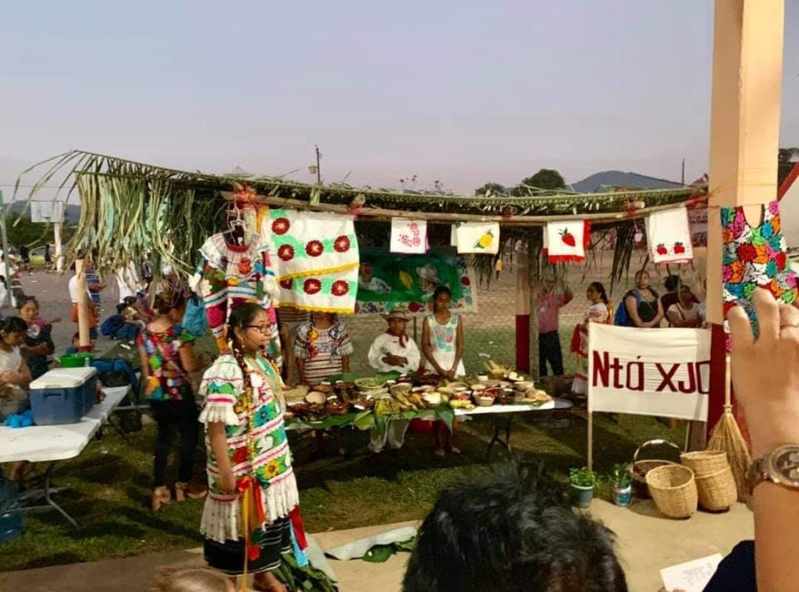
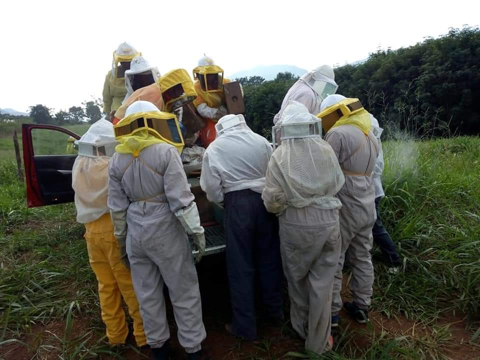
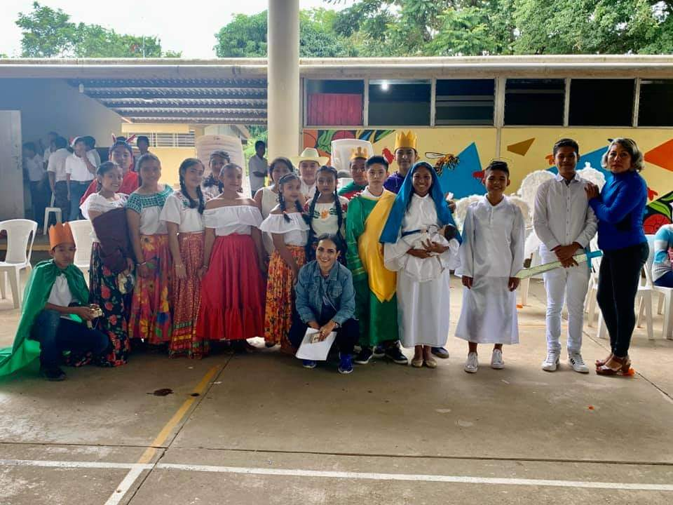
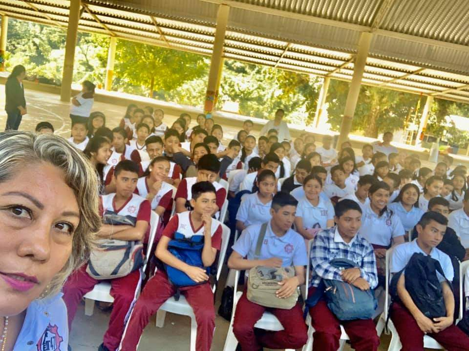
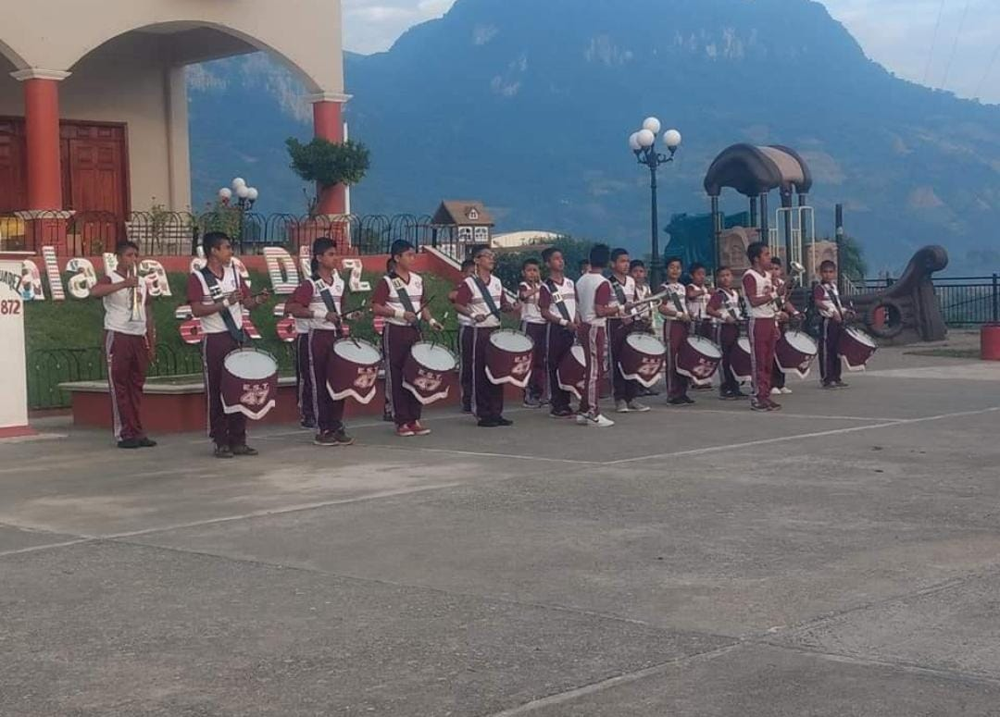
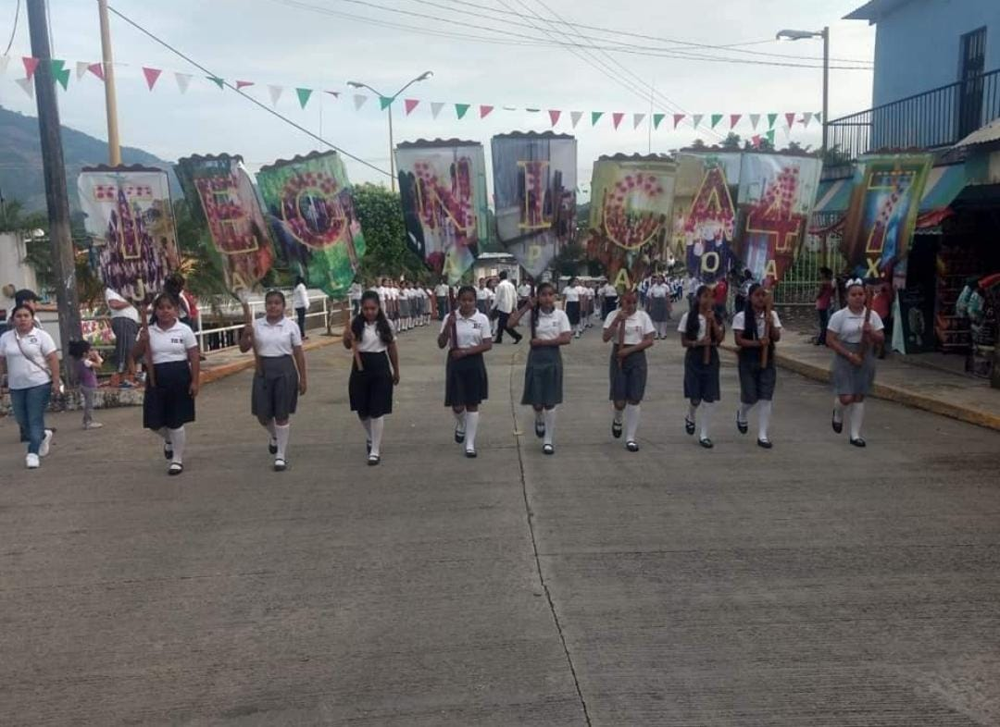
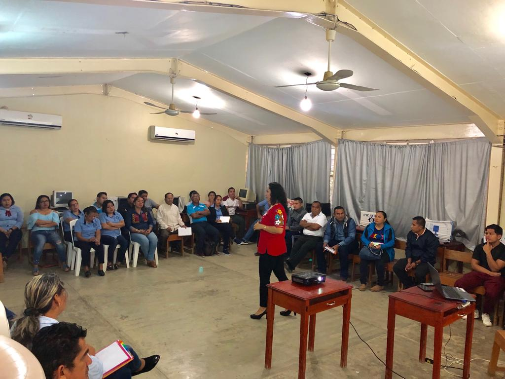
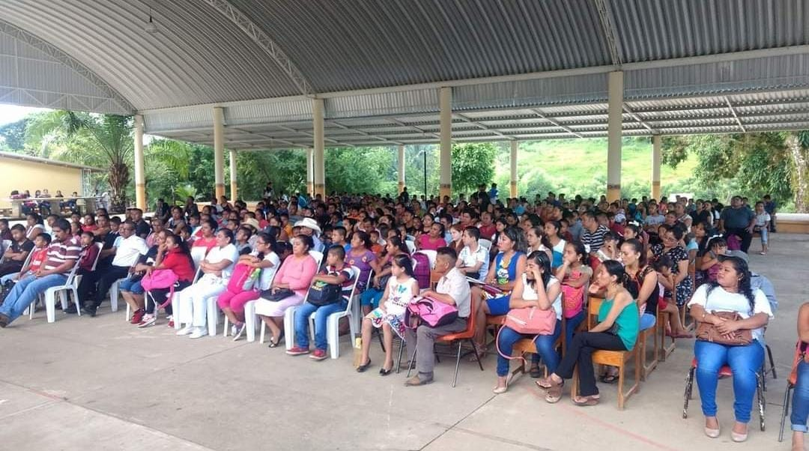
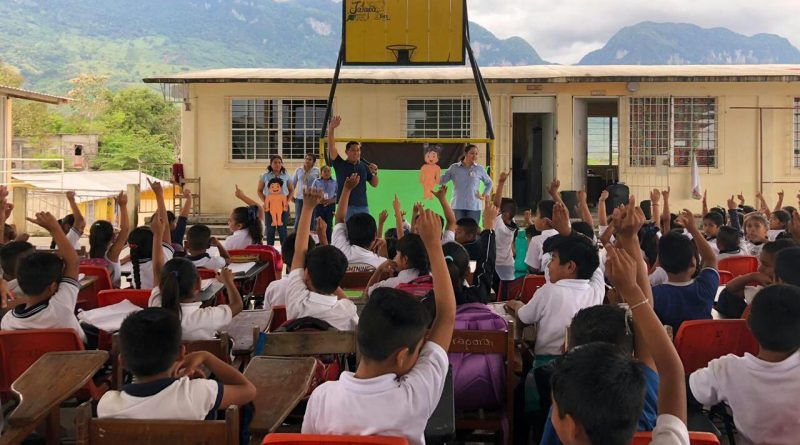

Dia de MuertosEs una tradición todavía arraigada principalmente en las comunidades indígenas de Oaxaca. |

Cosecha de MielSe aproxima la cosecha deliciosa miel 100% organica. |

Posada NavideñaToda la familia E.S.T 47 Les desea una bendecida noche buena y un prospero año nuevo. |

Visita de Antropologos Y BiologicosJunarear y rapel, muy concurridos por el alumnado. |

Banda de GuerraSon un medio de mando que tiene por objeto sustituir las órdenes a viva voz. |

DesfileConstituye un grupo marchante de personas a pie, a caballo o motorizado con un recorrido concreto en una celebración pública. |

ClasesEl cerebro no es un vaso por llenar, sino una lámpara por encender. |

ClausuraSe llevó a cabo la ceremonia de Clausura de la Escuela Secundaria Tenica No.47, contando con la presencia, del Presidente Municipal |

Talleresfavorecen el desempeño de los escolares. |